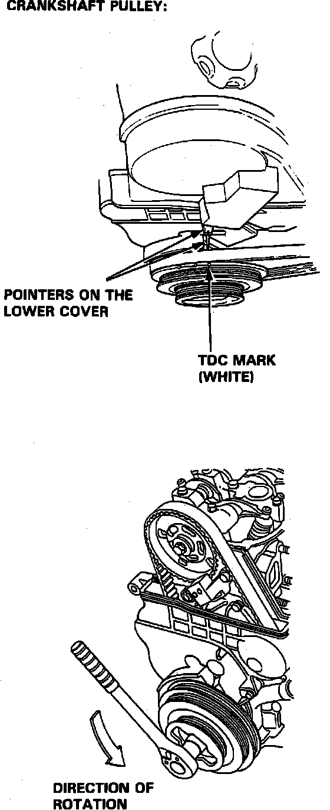
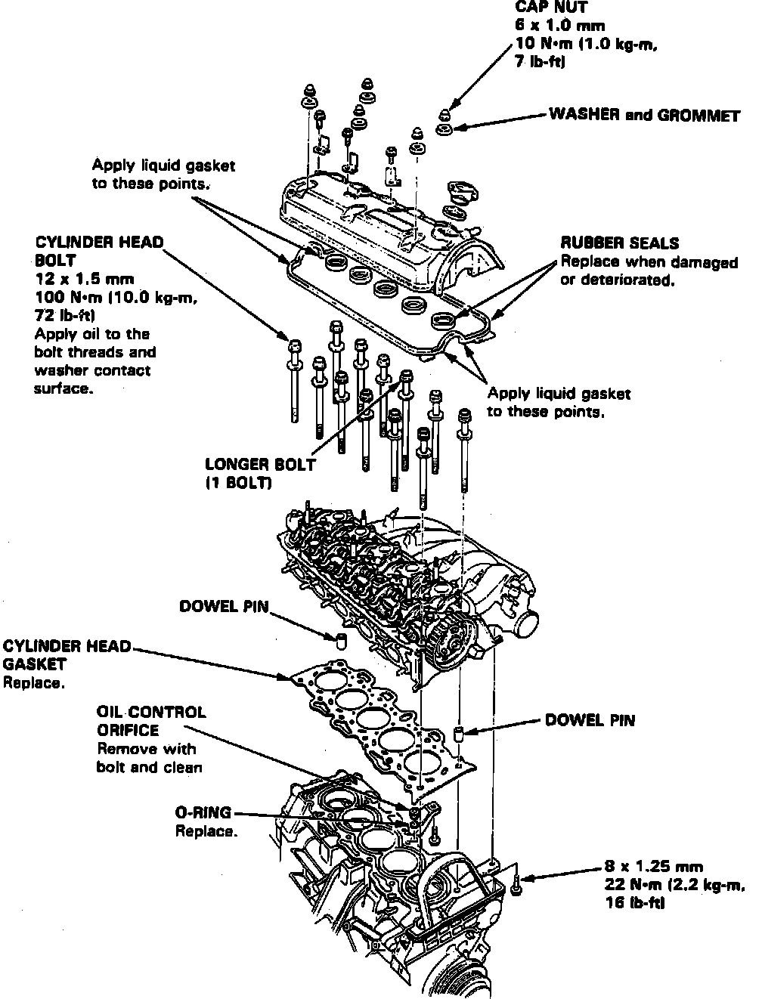
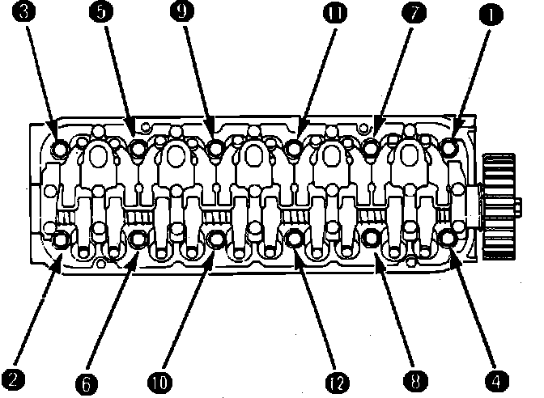
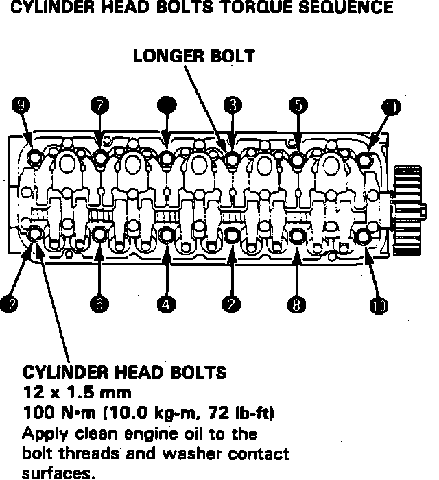

Cylinder Head Assembly: Service and Repair
Fig. 37 Positioning No. 1 Cylinder At TDC:

Fuel Pressure Relief:

1. On models equipped with radio coded theft protection system, refer to Vehicle Damage Warnings for system disarming and arming procedures. On models equipped with airbag system, refer to Technician Safety Information for system disarming and arming procedures.
2. Turn crankshaft so No. 1 piston is at TDC, Fig. 37.
3. Drain coolant.
4. Remove air flow tube.
5. Relieve fuel pressure as follows:
a. Remove fuel filler cap.
b. Using suitable wrench, hold banjo bolt and service bolt, Fig. 11.
c. Place suitable shop rag over service bolt and wrench. Place a shop towel over the fuel filter to prevent pressurized fuel from spraying over the engine.
d. Slowly loosen service bolt one complete turn to relieve pressure.
6. Disconnect fuel hose and fuel return hose.
7. Disconnect throttle cable at throttle body.
8. Disconnect engine ground wire and canister hoses from intake manifold.
9. Disconnect heater hoses and brake booster vacuum hoses.
10. Disconnect ignition coil wire, condenser wire and engine ground wire.
11. Remove ABS motor relay box, then battery heat shield.
12. Disconnect ignition wires, then remove distributor.
13. Disconnect the following electrical connectors;
a. TDC/CYL/CRANK sensor.
b. Thermoswitch.
c. Fuel injectors.
d. Exhaust gas recirculation (EGR).
e. Bypass solenoid valve.
f. Purge cut solenoid valve.
g. EAC valve.
h. TA and TW sensors.
i. Temperature unit.
14. Disconnect emission vacuum and bypass hoses from intake manifold.
15. Disconnect upper radiator hose and water bypass hose from thermostat case.
16. Remove intake manifold bracket attaching bolts.
Fig. 38 Cylinder Head Replacement:

Fig. 39 Cylinder Head Bolt Loosening Sequence:

17. Remove oxygen sensor, exhaust manifold bracket, exhaust pipe, exhaust upper cover, exhaust manifold and insulator plate.
18. Disconnect PCV hose, then remove cylinder head cover, Fig. 38.
19. Remove upper timing belt cover.
20. Loosen timing belt adjusting bolt 180° to release belt tension.
21. Push tensioner to release belt tension, then retighten adjusting bolt.
22. Remove timing belt.
23. Remove cylinder head bolts in sequence, Fig. 39. To prevent warpage, unscrew bolts in sequence 1/3 turn at at time, repeat until all bolts are loosened. Using suitable flat blade screwdriver, separate cylinder head from block.
24. Disconnect heater hose from connecting pipe.
25. Remove intake manifold from cylinder head.
Fig. 40 Cylinder Head Bolt Tightening Sequence:

26. Reverse procedure to install, noting the following;
a. Clean cylinder head and engine block mating surfaces prior to installation.
b. Use new head gasket.
c. Turn crankshaft to No. 1 piston TDC.
d. Tighten cylinder head attaching bolts in sequence, Fig. 40, to specifications.
27. On models equipped with radio coded theft protection system, refer to Vehicle Damage Warnings for system disarming and arming procedures. On models equipped with airbag system, refer to Technician Safety Information for system disarming and arming procedures.